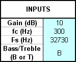
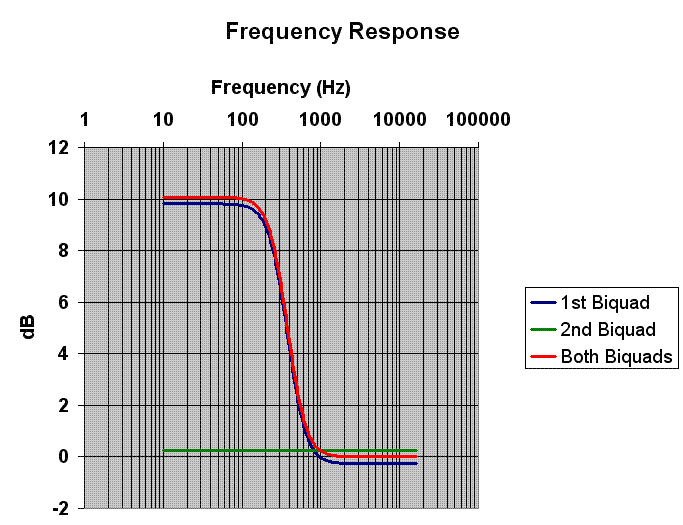
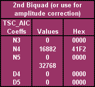

One extended TWL feature is the ability to apply an IIR filter to microphone sampling data and speaker output data. See SNDEX_SetIirFilter[Async] for information on setting IIR filters. This document explains how to use IIR_FilterBuilder, which is included with the TWL-SDK.
The $TwlSDK/docs/TechnicalNotes/IIR_FilterBuilder.xls Excel spreadsheet is designed to calculate IIR filter parameters. The calculated parameters can be used as parameters for the SNDEX_SetIirFilter[Async] functions.
To use this sheet, you need to enable the Analysis ToolPak from Tools > Add-Ins in the Excel main menu. (Excel 2003)
Choose one of the following three sheets to use.
| Sheet name | Filter types that can be calculated |
|---|---|
| Shelf Filters | Bass Shelf Filter, Treble Shelf Filter |
| EQ Filters | Band Pass Filter, Band Eliminate Filter |
| Butterworth Filters | High Pass Filter, Low Pass Filter |
Usually, the light blue items in the following figure are the only items on the sheet for which entries are required. Each sheet has slightly different input items.
The following tables shows the values that can be entered in each sheet.
| Input items | Description |
|---|---|
| Gain (dB) | Specify the amplitude gain. |
| fc (Hz) | Specify the cutoff frequency (frequency at which a 3 dB change occurs). |
| Fs (Hz) | Specify the sound sampling rate (47,610 or 32,730). |
| Bass/Treble | Specify "B" for a Bass Shelf Filter and "T" for a Treble Shelf Filter. |
| Input items | Description |
|---|---|
| Gain (dB) | Specify the amplitude gain. |
| BW (Hz) | Specify the frequency bandwidth from the center frequency to the frequency at which a 3 dB change occurs. |
| fc (Hz) | Specify the center frequency for changing the amplitude. |
| Fs (Hz) | Specify the sound sampling rate (47,610 or 32,730). |
| Input items | Description |
|---|---|
| High/Low | Specify "H" for a High Pass Filter and "L" for a Low Pass Filter. |
| fc (Hz) | Specify the cutoff frequency (frequency at which a 3dB change occurs). |
| Fs (Hz) | Specify the sound sampling rate (47,610 or 32,730). |
The following explanation uses the Shelf Filters sheet as an example.
If the values entered are as shown in the figure at the left, the frequency response graph, 1st biquad parameters, and 2nd biquad parameters will be updated in real time.
The figure to the left shows the calculated IIR filter parameters (the 1st biquad). The values for N0 through D2 correspond to the SNDEXIirFilterParam structure's members no through d2.
However, Values-type values must be type-cast to u16 when they are inserted in the SNDEXIirFilterParam structure. Use Hex-type values because they can be passed unchanged.
The blue line in the following figure shows the frequency response when this filter is applied. As you can see, its low frequencies are amplified by approximately 10 dB close to the 300-Hz boundary.
By looking closely at the blue line, you can see that the high-frequency region drops to approximately -0.1 dB as a side effect of the filter. This can be corrected by using one more IIR filter stage.
The figure to the left shows the IIR filter parameters for the 2nd biquad. The values for N3 through D5 correspond to the SNDEXIirFilterParam structure's members no through d2
However, Values-type values must be cast to type u16 when they are inserted in the SNDEXIirFilterParam structure. Use Hex-type values because they can be passed unchanged.
The green line shows the frequency response for the 2nd biquad only. The entire frequency band is amplified by approximately 0.1 dB. The red line shows the results of applying both the 1st biquad and 2nd biquad. If there are no problems with the 1st biquad results, you do not necessarily need to apply a 2nd biquad.
You must take note of the following when setting the calculated parameters in the SNDEXIirFilterParam structure.
u16 when passed.
2009/02/19 Added text about the Excel setting for enabling automatic calculation in this sheet.
2008/09/10 Added notes regarding the use of calculated parameters.
2008/09/06 Initial version.
CONFIDENTIAL